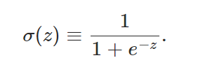
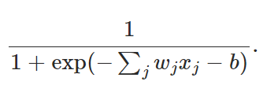
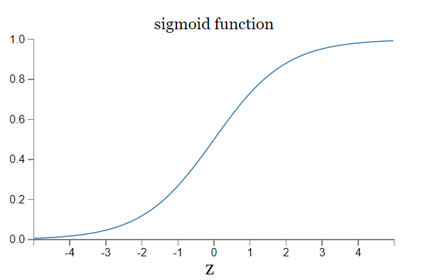
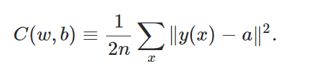
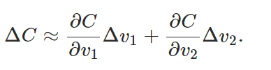
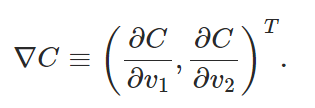
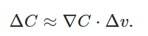
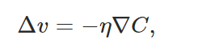
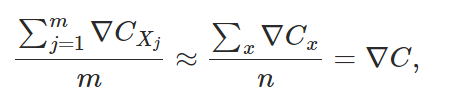
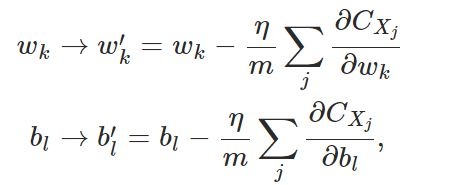

第一章
1. Sigmoid neurons
该激活函数的特点是变化平缓，输入的微小改变不至于导致输出结果的巨大变化，这样才能让神经网络更好的学习，也能更好的适应于新的数据输入（从已有的外推新的时不会造成造成认知的巨大变化，已有的经验才能适用，有点像A学会一题解法，但是条件变一下就不会了，而B却能举一反三，这里就是希望算法具备B的特质），使算法具备更高的鲁棒性。



2. cost function

上式中x是输入向量，y是对应于该输入的准确解向量，a是对应于x的神经网络计算值；本质上C是关于w, b的一个函数，我们需要找到一组w,b值，是的对于任意输入的x向量，C的值会很小，也就是预测值与真实值接近。而这是通过找到对于训练集（一个x的集合）所有x都能达到较好的估计效果的一组w,x来实现的。通过训练，让程序针对这一类问题掌握某种规律，从何应对从未接触过的新的同类问题。
解决上述问题的关键归结到找C函数的最小值，此处用到了梯度下降法
gradient descent





大致总结为：
计算C关于各个自变量的偏导；
取各变量的增量为一个系数（eta）乘上前面求得的偏导再去相反数，如此C的变化肯定是负数了，也就是下降了；这里η的选取是很重要的，因为这关系到第一个式子是否成了，也就是C能不能真的减小；
由此可以计算出一个新的V向量，也就朝“山坡”向下迈了一步，然后在这一个新的位置，继续上述过程，直到找到一个最低点。
stochastic gradient descent


由于需要找到的时一组对于所有x输入都比较适用的w,b值，因此需要考虑对于每个x输入求得一个梯度下降系数之后取个均值，但是这样未免太慢了点，不如把输入集分成很多同样大小的小集合，对一个小集合算出一个上述的均值梯度系数，算完后可以得到一组新的w,b值，也就是新起点；再在此基础上对下一个小集合继续算均值梯度系数，这样迭代下去，慢慢更新w,b值，直至算完所有小集合。